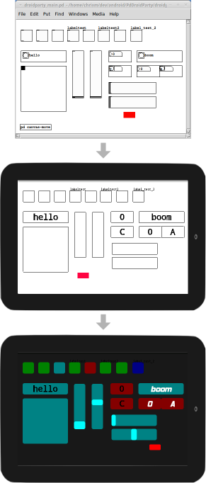

PdDroidParty
Run your Pure Data patches on Android with native GUIs emulated.
Download PdDroidParty-debug-REVNO.apk
Donate: 1prtyx7MwmKomyeEAhMiGYzNithTcmSJV
Useful PdDroidParty patches and abstractions:
(Unzip the zipfiles onto your device's sdcard e.g. into /sdcard/PdDroidParty/)
Get the GPLv3 source code from GitHub
On iOS? Check out PdParty for iOS and MobMuPlat.
Help and support
Need help? Ask a question on the Pure Data mailing list or the Pure Data Forum or another Pd community.
How to make patches for PdDroidParty
1. Create a new Pd patch called droidparty_main.pd in a subdirectory. This patch will contain your GUI objects like sliders, toggles, numberboxes etc. If you have an existing patch you want to run with PdDroidParty you can create the droidparty_main.pd patch in the same directory.
2. PdDroidParty GUI patches will be scaled to fit the screen of the device. Your patches should have the rough dimensions of a phone/tablet in landscape mode (e.g. 3:2 aspect ratio or e.g. 480x320 should usually work well). If it's not exact it doesn't matter - the GUI elements will be scaled.
3. Numberbox, Sliders, Toggle, Comment, Bang, and Canvas are currently rendered by PdDroidParty, although not feature complete. Check out the GUI abstractions in the droidparty-abstractions.zip file - these are also supported natively. See the Abstractions section below for more details.
4. All GUI elements should communicate with the main audio patches using send and receive only. You can usually set send and receive for each GUI by right clicking on the object and choosing 'properties' in Pd. Do not directly connect cables to the GUI elements as they won't work. It helps to keep the GUIs on their own in the droidparty_main.pd file and have it include the logic of your patch as an abstraction or subpatch containing senders and receivers for interfacing with GUI elements. This is good patch design practice anyway as it is basically a model-view-controller methodology.
5. Copy the entire directory containing your droidparty_main.pd onto the sdcard of your device under a directory called PdDroidParty. You can usually do this over USB with most phones and tablets by mounting your device as a hard drive on your computer. For example your directory called MyPdPatch containing a patch called droidparty_main.pd could be copied to /sdcard/PdDroidParty/MyPdPatch on your device.
6. Run PdDroidParty and you will find an entry named after your subdirectory. Tap it to load your patch.
Sharing your patches
You can share your PdDroidParty compatible patches with people by zipping up the folder with your patche in it and renaming the file extension from .zip to .dpz. When you send a .dpz file to somebody PdDroidParty will launch and run the patch on their device if they have the app installed. You should make sure the zip file contains the top level directory with the name of your patch, for example MyPatch.zip should contain a folder called MyPatch which contains your files like droidparty_main.pd etc. You can also include a Pd comment with the text "version: 99" to set the version of your patch so that people receiving them will know what version they are being asked to install. Each time you release a new version of your .dpz file you can increment the version number.
Abstractions
As well as the supported internal objects listed above the following abstractions work in Pd and are emulated natively on the device. Load the file droidparty-abstractions/_OVERVIEW.pd for more details and specific usage:
- [wordbutton] - It's like a bang, but on the device it looks like a box with a word in it.
- [numberbox] - It's like a numberbox, but on the device it stretches to fit a rectangle. (easier layout).
- [taplist] - Lets the user tap through a list of symbols/floats.
- [touch] - Kaospad style 2d touch surface.
- [menubang] - Puts an entry into the menu which sends a bang when the user selects it. Optional icon is called menubang-xxxx.png where xxxx is the name of your menubang.
- [loadsave] - Wraps and openpanel/savepanel type of interface into a single abstraction that lets the user specify or choose filenames using the Android interface.
MIDI
You can connect your MIDI controllers and keyboards to your device running PdDroidParty and use them to control your patches with Pd's built-in midi objects like [ctlin] and [notein]. You will probably need an OTG USB cable to plug in your MIDI devices and Android version 2.4 or higher. Once you have plugged in your MIDI device and loaded a PdDroidParty path, use the menu to enable access to the device in the software.
Fonts
You can theme all of the defult non-SVG-themed widgets with a font other than the built-in courier font. Put a TTF font file of your choice in the patch directory and call it 'font.ttf' if you want aliased rendering, or 'font-antialiased.ttf' if you want anti-aliased rendering. This will cause PdDroidParty to render that patch with the font you have chosen.
SVG Widgets
It's possible to theme your patches with SVG images now. You can theme the following Pd GUI objects: canvas, numberbox (the abstraction), sliders, taplist (abstraction), toggle, touch (abstraction), wordbutton (abstraction).
To theme e.g. the toggle, create an SVG called Toggle.svg in the directory holding your droidparty_main.pd patch. You can also have separate images for specific toggles by using their send name or label name in the SVG filename. For example a toggle with a send name of "mysend" could have an SVG called Toggle-mysend.svg which would override the default Toggle.svg image. Send and label names are split on the hyphen ("-") character so for example if you have two toggles with send names of mysend-1 and mysend-2 you could theme them separately with Toggle-mysend-1.svg and Toggle-mysend-2.svg or you could theme them with the same image by creating a file called Toggle-mysend.svg which would apply to both.
The SVG renderer is not very robust, so the best way to design your own widget graphics is to start with the widget graphics in droidparty-tests/svg-widgets/*.svg and modify them. The renderer only really works on plain paths, so make sure you convert any objects like rectangles or circles to plain SVG paths. The renderer used is a fork of svg-android with some support for Inkscape hacked in.
You can put three special attributes on the SVG element using a text editor, for font customisation. They are textFont, textColor, textOffset and textAntialias. textOffset is a relative value like "0.25 0.25" which will move the text down and to the right relative to the center of the widget being drawn. textFont should be the name of the font file excluding the extension. textAntialias should be "true" or "false". textColor is a hex string like "#ffffff".
ViewPort canvas
It is possible to map only a part of the main Pd window to the actual device screen, by using a specially configured canvas GUI:
- In the main pd window, create a canvas gui (menu Put -> Canvas)
- Make sure the canvas is in the background (select all the objects but the canvas, cut and paste)
- Edit the canvas properties, set the receive name to "ViewPort" and configure its size and position to select the part of the window you want to display on the PdDroidParty screen
- You can dynamically change the viewport by sending "pos" and "vis_size" messages to "ViewPort", so you have visual indication of the portion of the screen that will be displayed on PdDroidParty
The selected viewport area will be rescaled in order to fill the screen of the device.
See droidparty-demos/pure-widgets-demo/droidparty_main.pd for an example of this feature.
Standalone apps
You can use the PdDroidParty code base to bundle your own Pd patches as standalone Android apps.
- Get the source code: `git clone https://github.com/chr15m/PdDroidParty.git MySynthesizer`
- Convert the app name to whatever you like: `./convert-app-name mysynth "My Synthesizer"`
- Replace your own icon 72x72 PNG icon over res/drawable/icon.png
- (optional) Place a splash.svg graphic with 1.333 aspect ratio (e.g. 640x480) in res/raw/
- (optional) edit assets/about.html with your own "about" text
- Place your patch and files with a droidparty_main.pd in the "patch" subfolder
- Pack the patch subfolder into an Android zip resource: `./pack-patch`
- Follow the instructions in the README.txt file for building.
There are some good tips for Windows users in this forum thread.
If you make an app based on this source code, I would love to hear about it.
Attributions
Copyright Chris Mccormick 2011-2013. With contributions from: Kishan Muddu, Antoine Rousseau.
Made with libpd by Peter Brinkmann and Pure Data by Miller S. Puckette. They are BSD licensed.
Portions of this page and the PdDroidParty software contain modifications based on work created and shared by Google and used according to terms described in the Creative Commons 3.0 Attribution License.